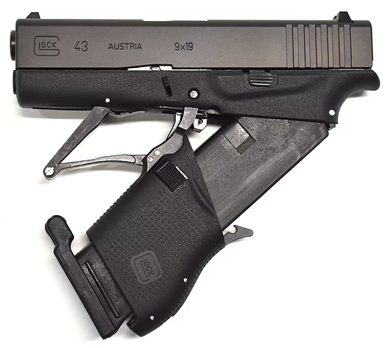
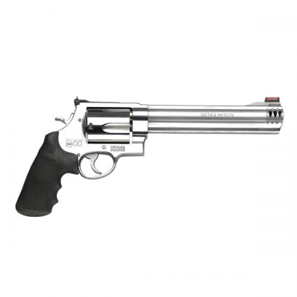

This pistol is one of a kind. It uses the caliber 5.7x28, which is also used by some specific rifles and it has a pointy tip,compared to most of the normal pistol calibers,which are flat-ish.
That makes the penetrating force of this gun much higher than othe from its kin.
That makes the penetrating force of this gun much higher than othe from its kin.

This is a fully foldable glock 43 pistol. Wich can be placed into the Micro Roni kit, wich is also foldable and have a concealed pistol with longer barrel and a stock.

This MASSIVE pistol has a 8.38inch barel (21.3cm) and its total lenght is 15inch (38.1cm). It weight is around 2 kilos. This gun is chambered in 500 S&W500. This cartridge has 2600ft/lb. muzzle energy, wich is even more powerfull than some rifle rounds.